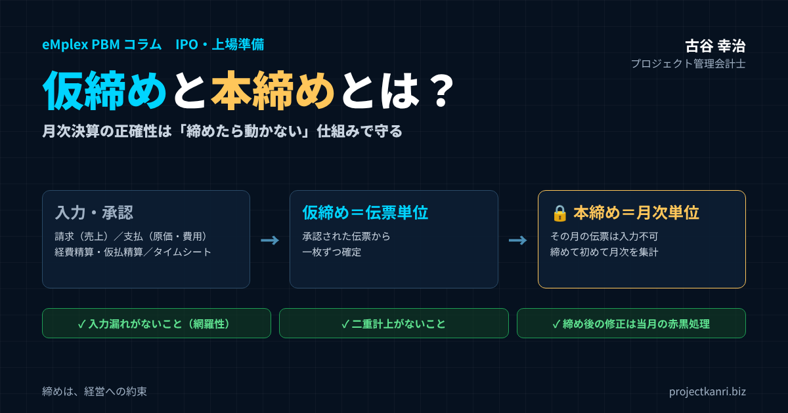

仮締めと本締めとは？月次決算の正確性を守る締め処理の仕組み―伝票単位の仮締めと月次単位の本締め、請求・支払・経費精算・仮払精算・タイムシートの確定、入力漏れと二重計上のチェック、締め後の修正ルールまで

結論：月次決算の正確性は「締めたら動かない」仕組みで守る
この記事の要点
- データの確定：締めた後の入力・編集・削除は数字のずれを生む。エクセルでは防げない
- 仮締め：伝票単位の締め。承認された伝票から一枚ずつ確定
- 本締め：月次単位の締め。本締め後はその月の伝票は入力不可。締めて初めて月次を集計
- 対象：請求（売上）、支払（原価・費用）、経費精算・仮払精算、タイムシート
- 本締めの前に：入力漏れがないこと（網羅性）と二重計上がないことを確認
- 締めた後の修正：当月の赤黒処理が基本。締め解除は限られた権限と記録のもとで
プロジェクト管理会計士の古谷です。月次決算の早期化や、プロジェクト別の損益の管理のご支援をしていると、必ず突き当たる問題があります。それは、一度締めたはずの数字が、後から変わってしまうという問題です。
経営会議で報告した先月のプロジェクトの粗利が、翌週には別の数字になっている。会計の試算表と、プロジェクトの損益の合計が合わない。調べてみると、締めた後に誰かが外注費の伝票を追加していた、経費精算の金額を修正していた、タイムシートの工数を書き換えていた。こうしたことが起きると、数字への信頼は一気に失われます。
月次決算を正確に行うためには、月ごとのデータを確定させることが必要です。月の締めの処理を行った後に、入力や編集、削除が行われると、数字がずれ、正確性に欠けることになります。そして、これは手作業やエクセルでの管理では、確実に防ぐことができない処理です。
本記事の結論は三つです。第一に、締めの処理を、伝票の単位で確定させる仮締めと、月の単位で確定させる本締めの二段階で設計すること。第二に、本締めの前に、入力漏れがないこと、二重計上がないことを確認し、データの網羅性を担保すること。第三に、本締めの後は入力や修正ができない仕組みとし、修正が必要な場合のルールを決めておくことです。これは、プロジェクト型の業務システムを導入する際の、非常に重要なポイントでもあります。
なぜ月ごとのデータの確定が必要なのか
月次決算の目的は、経営がその月の業績を正しく把握し、次の打ち手を判断することです。その前提となるのは、その月の数字が確定していることです。確定していない数字をもとに議論しても、後で数字が変われば、議論そのものが無意味になります。
| 問題 | 内容 |
|---|---|
| 数字の食い違い | 経営会議の資料・試算表・後の資料の数字がそれぞれ違う |
| 比較ができない | 前月比較・予算比較・累計の前提が崩れる |
| 説明の責任を果たせない | 上場準備・金融機関・監査への説明で信頼を損なう |
データが確定していないと、三つの問題が起きます。一つ目は、数字の食い違いです。経営会議で使ったプロジェクトの損益の資料と、会計の試算表と、後で作った資料の数字が、それぞれ違ってしまいます。どれが正しいのかを確かめるだけで、多くの時間が使われます。
二つ目は、比較ができなくなることです。前月の数字が後から変わると、前月と比べて今月がどうだったのか、予算と比べてどうだったのかという分析の前提が崩れます。累計の数字も、毎月少しずつ変わっていきます。
三つ目は、説明の責任を果たせなくなることです。上場の準備をしている会社や、金融機関に業績を説明する会社では、報告した数字が後から変わることは、管理の体制の信頼を損ないます。監査の場面でも、いつ、誰が、どの数字を変えたのかを説明できなければなりません。月ごとのデータの確定は、経営の判断と、外部への説明の責任の両方の土台なのです。
とくにプロジェクト型のビジネスでは、一つのプロジェクトの損益が、売上、外注費、経費、工数という複数のデータの組み合わせで決まります。どれか一つのデータが後から変わるだけで、プロジェクトの粗利は変わります。プロジェクトの数が多い会社ほど、データの確定の重要性は高まります。
なぜ手作業やエクセルの管理では締められないのか
エクセルでプロジェクトの損益や経費を管理している会社でも、月末には「締め」と呼ばれる作業をしています。しかし、エクセルの管理には、締めた後の変更を防ぐ仕組みがありません。
| 観点 | エクセル管理 | 仮締め・本締めの仕組み |
|---|---|---|
| 締めた後の変更 | 誰でもいつでも書き換えられる | 本締め後は入力・修正・削除できない |
| 正しいデータ | ファイルの複製でどれが正か分からなくなる | 一つのデータで管理 |
| 変更の履歴 | 確実には残らない | 誰がいつ何をしたか記録 |
| 複数データの時点 | ファイルごとにばらばら | データ種類ごとに締め状況を管理 |
エクセルのファイルは、誰でも、いつでも書き換えることができます。シートを保護する機能はあっても、保護を外せば簡単に書き換えられますし、ファイルを複製して別のファイルで作業されれば、どれが正しいファイルなのかも分からなくなります。変更の履歴も、誰がいつ何を変えたのかを、確実に残すことはできません。
また、エクセルでは、請求、支払、経費精算、タイムシートといった複数のデータを、別々のファイルで管理していることが多くあります。それぞれのファイルが、いつの時点の数字なのかがそろっていなければ、プロジェクトの損益を集計しても、正しい数字にはなりません。
私は、エクセルを否定するつもりはありません。小さな会社が、まずエクセルで予算と実績の管理を始めることには大きな意味があります。しかし、月次の数字を確定させ、確定した数字を守るという点では、エクセルには限界があります。会社の規模が大きくなり、関わる人が増えるほど、その限界は深刻になります。
締めた後のエクセルのファイルが誤って上書きされ、前月の数字を復元するのに多くの時間がかかる、といったことは、どの会社でも起こりえます。数字を守る仕組みは、ファイルの管理の工夫だけでは限界があるのです。
仮締めと本締め：二つのモードの違い
プロジェクト型の業務システムには、通常、仮締めと本締めの二種類の締めのモードがあると便利です。
| 項目 | 仮締め | 本締め |
|---|---|---|
| 単位 | 伝票単位 | 月次単位 |
| タイミング | 伝票が承認された時点（月の途中でも） | 月末後、全伝票の仮締めと確認の後 |
| 確定するもの | 一枚一枚の伝票の内容 | その月のデータ全体 |
| その後の操作 | 担当者は修正不可（差し戻し・取消は所定の手順で） | その月の伝票は入力・修正・削除・日付変更ができない |
| 集計 | — | 締め処理で初めて月次の売上などが集計される |
仮締めは、伝票の単位での締めです。一枚一枚の請求の伝票、支払の伝票、経費精算の伝票、タイムシートの記録について、内容が確認され、承認された時点で、その伝票を確定させます。仮締めされた伝票は、担当者が自由に修正することはできず、修正が必要な場合は、決められた手順で差し戻すか、取り消します。
本締めは、月の単位での締めです。その月のすべての伝票が仮締めされ、入力漏れや二重計上がないことを確認したうえで、その月のデータ全体を確定させます。本締めを行うことで、その月の伝票は入力ができなくなります。新しい伝票の追加も、既存の伝票の修正や削除もできません。
そして、締めの処理を行って初めて、月次の売上などが集計されるという仕組みにしておくことが大切です。入力の途中の数字や、承認されていない伝票が、月次の集計に混ざらないようにするためです。経営会議や会計の処理で使う数字は、本締めされた数字だけ、というルールにします。
二つのモードを分ける理由は、確定の粒度とタイミングが違うからです。伝票は、月の途中でも、承認されたものから順に確定させていくことができます。一方で、月全体の確定は、すべての伝票がそろってからでなければできません。仮締めで伝票を一枚ずつ固めながら、本締めで月全体を固める。この二段階の仕組みが、早さと正確さを両立させます。
仮締めの段階では、伝票の内容に誤りが見つかった場合、承認者が差し戻すことで、担当者が修正できるようにしておきます。差し戻しの履歴も残しておけば、どの伝票で、どのような誤りが多いのかが分かり、入力の手順の改善に役立ちます。
締め処理の流れ：入力から仮締め、本締めまで
仮締めと本締めの流れを、時系列で整理しておきましょう。
| 時期 | 作業 | 担い手 |
|---|---|---|
| 月中 | 伝票の入力 → 承認 → 仮締め（承認されないものは差し戻し） | 担当者・上長・PM |
| 月末後 第2営業日 | 伝票の入力・承認の期限 | 全部門 |
| 月末後 第3営業日 | 入力漏れ・二重計上のチェック、未着分の見積計上 | 経理 |
| 月末後 第4営業日 | 本締め（ロック） | 経理責任者 |
| 本締め後 | 月次の集計、プロジェクト別・部門別損益、仕訳データ作成 | 経理・システム |
月の途中では、担当者が伝票を入力し、上長や関係する部門が承認します。承認された伝票は、その時点で仮締めとして確定します。承認されない伝票は、差し戻されて担当者が修正します。
月末を過ぎたら、締めの期限までに、未入力や未承認の伝票がないかを確認します。期限までに入力や承認が終わらなかった伝票は、催促するか、見積で計上するか、翌月に回すかを判断します。そのうえで、入力漏れと二重計上のチェックを行い、問題がなければ本締めを行います。本締めの後、その月の数字が集計され、プロジェクト別、部門別の損益や、財務会計への仕訳のデータが作られます。
この流れを、月次決算のカレンダーに組み込んでおくことが大切です。たとえば、伝票の入力と承認の期限を月末後の第二営業日、チェックを第三営業日、本締めを第四営業日、というように決めておけば、関係する部門は、いつまでに何をすればよいのかが分かります。
仮締めを月の途中から進めておくことの効果は大きいものです。月末を待たずに、承認された伝票から順に確定させていけば、月末後に確認しなければならない伝票の件数は、月末の数日分に絞られます。締めの作業が月末に集中しなくなり、本締めまでの日数も短くなります。
締めの対象となる業務データ
締めの対象となる具体的な業務のデータとしては、請求、つまり売上のデータ、支払、つまり原価や費用のデータ、経費精算と仮払精算のデータ、そしてタイムシートのデータが挙げられます。それぞれの締めのポイントを見ていきましょう。
| データ | 内容 | 仮締めのタイミング | 主な注意点 |
|---|---|---|---|
| 請求（売上） | 検収・納品・進捗に基づく売上と請求 | 請求伝票の承認時 | 月末付近の検収、進捗報告の確定 |
| 支払（原価・費用） | 外注費・仕入・経費の請求書と支払依頼 | 支払依頼の承認時 | 請求書の未着、発注との照合 |
| 経費精算・仮払精算 | 立替経費の精算、仮払金の精算 | 上長承認・経理確認時 | 申請の遅れ、未精算の仮払金 |
| タイムシート | プロジェクト別の工数 | PM・上長の承認時 | 未入力、締め後の付け替え |
これらのデータは、それぞれ発生する部門も、入力する人も、確定するタイミングも違います。そして、プロジェクトの損益は、これらすべてのデータが組み合わさって初めて確定します。どれか一つでも締めが遅れたり、締めた後に変わったりすれば、プロジェクトの損益は正しくなりません。データの種類ごとに締めの状況を管理し、すべてがそろったことを確認してから、月全体を本締めすることが大切です。
請求（売上）データの締め
請求のデータは、売上の根拠となる、最も重要なデータです。プロジェクトの売上は、検収や納品、進捗などに基づいて計上され、請求書の発行につながります。
請求のデータの仮締めは、売上の計上の根拠となる情報がそろい、請求の伝票が承認された時点で行います。たとえば、検収書を受け取った案件の請求の伝票を、営業の責任者が承認したら、その伝票を仮締めします。仮締めした請求の伝票は、営業の担当者が金額や取引先を勝手に変えることはできません。
請求のデータで特に注意したいのは、月末の近くに検収や納品が集中する案件です。月末の最終日に検収された案件の売上が、当月に計上されているか、翌月に回っているかで、月次の売上は大きく変わります。売上の計上の基準日を明確にし、月末の数日間の案件の一覧を、本締めの前に確認しましょう。
進捗に応じて売上を計上する案件では、プロジェクトマネージャーの進捗や着地見込みの報告が、売上の計算の前提になります。進捗の報告も、締めの対象として扱い、本締めの後に変わらないようにすることが大切です。
請求のデータを仮締めした後に、顧客から請求の金額の訂正を求められることもあります。その場合も、仮締めした伝票を直接書き換えるのではなく、取り消しの伝票と新しい伝票で処理し、訂正の経緯を記録しておきます。顧客に発行した請求書と、社内の記録が常に一致していることが大切です。
支払（原価・費用）データの締め
支払のデータは、外注費や仕入、経費などの原価や費用の根拠となるデータです。取引先から届いた請求書をもとに、支払の依頼の伝票を作り、承認を経て、支払いと費用の計上につながります。
支払のデータの仮締めは、請求書の内容が発注の内容と一致していることを確認し、支払の依頼の伝票が承認された時点で行います。仮締めした支払の伝票は、金額、取引先、プロジェクトのコード、費用の科目を、担当者が勝手に変えることはできません。
支払のデータで最も問題になるのは、請求書の到着の遅れです。月末を過ぎても取引先の請求書が届かないと、その月の原価が確定しません。本締めの期限までに届かない請求書は、発注の金額をもとに見積で計上し、翌月に請求書が届いた時点で差額を調整する、というルールを決めておきます。発注の段階でプロジェクトのコードと金額を登録しておけば、請求書が届いていない発注の一覧を、本締めの前に確認することができます。
支払のデータには、取引先の口座の情報や支払の予定日も含まれます。支払の伝票を仮締めした後に、口座の情報が書き換えられると、不正な送金のリスクにもつながります。支払に関わる情報の変更は、とくに厳格な承認の手続きと記録の対象にしておきましょう。
経費精算・仮払精算データの締め
経費精算は、社員が立て替えた交通費や会議費などを精算するデータです。仮払精算は、出張などの前に会社から仮に渡したお金を、実際にかかった費用と照らして精算するデータです。どちらも、社員一人ひとりが申請するため、件数が多く、申請の遅れや漏れが起きやすいデータです。
| 区分 | 流れ | 本締め前の確認 |
|---|---|---|
| 経費精算 | 社員が立替 → 申請 → 上長承認 → 経理確認 | 未申請者、大口の未申請分 |
| 仮払精算 | 会社が仮払い → 出張等 → 実費で精算 | 未精算の仮払金の一覧と期限 |
経費精算の仮締めは、社員の申請を上長が承認し、経理が内容を確認した時点で行います。仮締めした経費精算の伝票は、金額や科目、プロジェクトのコードを変えることはできません。月末の締めの期限までに申請されなかった経費は、原則として翌月の計上とし、金額の大きいものだけを見積で計上します。
仮払精算では、仮払金の残高の管理が重要です。仮払いをしたまま精算されていない仮払金が残っていると、その分の費用が計上されず、費用が少なく見えます。本締めの前に、未精算の仮払金の一覧を確認し、精算の期限を過ぎているものは、本人に精算を促します。仮払金が長く残ったままになることは、内部統制の面でも望ましくありません。
経費精算の伝票には、必ずプロジェクトのコードを付けることをお勧めします。プロジェクトのための交通費や会議費は、そのプロジェクトの直接の経費です。コードが付いていなければ、プロジェクトの損益に経費が反映されず、プロジェクトの採算が実態より良く見えてしまいます。
経費精算の締めを早めるには、社員がスマートフォンなどから、その場で申請できる仕組みにしておくことが効果的です。領収書を月末にまとめて処理する習慣があると、申請は必ず遅れます。
タイムシートデータの締め
プロジェクト型のビジネスでは、タイムシートのデータの締めが、プロジェクトの原価の確定の鍵を握ります。社員が、どのプロジェクトに、何時間使ったのかの記録が、労務費の原価の根拠になるからです。
タイムシートの仮締めは、社員が入力した工数を、プロジェクトマネージャーや上長が確認し、承認した時点で行います。週ごとや日ごとに承認していく運用にすれば、月末に一度にまとめて確認するよりも、負担が分散され、記憶が新しいうちに誤りを直すことができます。仮締めした工数は、社員が後から書き換えることはできません。
タイムシートで最も問題になるのは、締めた後の書き換えです。月が終わった後に、ある社員が先月の工数を別のプロジェクトに付け替えると、すでに報告したプロジェクトの原価が変わってしまいます。本締めを行えば、その月の工数は書き換えられなくなり、プロジェクトの原価が確定します。
本締めの前には、未入力の社員がいないか、所定の労働時間と入力された工数の合計に大きな差がないかを確認します。工数の入力の漏れは、そのままプロジェクトの原価の漏れになります。勤怠の記録と工数の記録を突き合わせれば、入力の漏れを見つけやすくなります。
工数の承認を担うプロジェクトマネージャーにとっても、タイムシートの締めは自分のプロジェクトの原価を守る手段です。承認の際には、工数の合計だけでなく、作業の内容がプロジェクトの範囲に合っているかも確認しましょう。
プロジェクトの完了の締めと、月次の締め
月次の締めとは別に、プロジェクトそのものの締め、つまりプロジェクトの完了の処理も大切です。プロジェクトが完了した後も、そのプロジェクトのコードで工数や経費の入力ができる状態のままにしておくと、完了したはずのプロジェクトに、後から原価が付いてしまいます。
プロジェクトが完了したら、売上と原価の計上がすべて終わったことを確認し、そのプロジェクトのコードへの新しい入力を止めます。完了の後に発生した保守や追加の作業は、別のプロジェクトのコードで管理します。こうすることで、完了したプロジェクトの最終の採算が確定し、積算と実績の比較や、次の見積への振り返りにも、確定した数字を使うことができます。
月次の締めが時間の軸での確定だとすれば、プロジェクトの完了の締めは、案件の軸での確定です。二つの軸で数字を確定させることで、プロジェクト型ビジネスの数字は、時間で見ても案件で見ても、信頼できるものになります。
業種別の締めの注意点
締めの基本は業種を問いませんが、業種ごとに、締めで特に注意すべきデータがあります。
| 業種 | 遅れやすいデータ | 工夫 |
|---|---|---|
| 建設業 | 協力会社の出来高査定と請求 | 査定の期限を早める、未請求の出来高を見積計上 |
| システム開発 | SESの精算時間、外注の検収 | 精算の締め日を契約で明確化 |
| 映像・イベント制作 | 外部スタッフ・制作会社の請求、追加請求 | 発注時に金額を登録し未着分を見積計上 |
| コンサルティング | タイムシート、立替経費 | 週次の承認、経費の申請期限 |
建設業では、協力会社の出来高の査定と、その請求のデータの締めが重要です。出来高の査定が遅れると、工事の原価が確定しません。システム開発では、SESの精算の時間の確定が遅れやすく、精算の幅を超えた稼働の金額が、月をまたいで確定することがあります。映像やイベントの制作では、外部のスタッフや制作会社からの請求が遅れやすく、制作の終わった後に追加の請求が届くこともあります。
業種ごとの特徴に合わせて、遅れやすいデータの締めの期限を早めに設定する、見積計上の対象を決めておく、といった工夫をしてください。
本締めの前に確認すること：入力漏れと二重計上
本締めを行うには、入力漏れのデータがないこと、二重計上のデータがないことを確認してから行います。本締めの後は修正ができなくなるため、この確認が、月次決算の正確性を担保する最後の関門になります。
| データ | 入力漏れの確認 | 二重計上の確認 |
|---|---|---|
| 請求（売上） | 受注・契約・検収予定の一覧と突き合わせ | 同一取引先・金額・請求書番号 |
| 支払（原価・費用） | 発注の一覧と突き合わせ（請求書未着の発注） | 同一請求書の重複入力、経費精算との重複 |
| 経費精算・仮払精算 | 社員ごとの申請状況、未精算の仮払金 | 同一領収書の重複申請 |
| タイムシート | 未入力者、勤怠と工数の差 | 同じ時間の重複登録 |
中でも、入力漏れのデータの網羅性は、非常に大事です。監査の世界では、記録された取引が実際に存在することを実在性、存在する取引がすべて記録されていることを網羅性と呼び、どちらも財務の数字の正しさを支える重要な観点とされています。月次決算で問題になりやすいのは、記録された取引の誤りよりも、記録されていない取引、つまり漏れのほうです。記録されていないものは、記録を見ているだけでは見つけられないからです。
入力漏れを見つけるには、記録の外側にある情報と突き合わせることが必要です。請求であれば、受注や契約の一覧、検収の予定の一覧と突き合わせ、請求されていない案件がないかを確認します。支払であれば、発注の一覧と突き合わせ、請求書が届いていない発注を確認します。経費であれば、社員ごとの申請の状況を、タイムシートであれば、社員ごとの入力の状況と勤怠の記録を確認します。
二重計上は、同じ取引が二回記録されてしまうことです。同じ請求書が二回入力された、同じ領収書で二回経費精算された、外注先の請求書を支払の伝票と経費精算の両方で処理した、といったことが起きます。取引先、金額、日付、請求書の番号などが同じ伝票を抽出して確認すれば、二重計上の多くは見つけることができます。
チェックの結果は、毎月記録しておくことをお勧めします。どのデータで、どのような漏れや重複が見つかったのかを記録しておけば、繰り返し起きている問題が分かり、入力の仕組みや運用のルールの改善につなげることができます。
網羅性を担保する仕組み
網羅性の確認を、毎月、人の目だけで行うのは大きな負担です。網羅性を担保するには、確認の作業そのものを仕組みに組み込むことが大切です。
| 仕組み | 内容 |
|---|---|
| 前の工程とつなぐ | 受注から請求、発注から支払の伝票を作り、伝票がないものを一覧化 |
| 締め状況の見える化 | データ種類・部署ごとの未入力・未承認・仮締め済みの件数 |
| 繰り返し取引の把握 | 前月にあって今月にない取引、前月比で大きく変動した取引 |
一つ目の仕組みは、前の工程とつなぐことです。請求の伝票を受注の情報から作る、支払の伝票を発注の情報から作る、というように、前の工程の情報から伝票を作る流れにしておけば、受注や発注があるのに伝票がない、という状態をシステムが一覧で示すことができます。
二つ目の仕組みは、締めの状況を見える化することです。データの種類ごとに、未入力、未承認、仮締め済みの件数を一覧にし、どの部署の、どのデータの締めが遅れているのかを、経理の担当者がひと目で分かるようにします。
三つ目の仕組みは、繰り返し発生する取引を把握しておくことです。毎月発生する外注の費用や、継続の契約の売上は、前月にあって今月にない取引を抽出することで、漏れに気づくことができます。前月との比較で、大きく変動した取引先やプロジェクトを確認することも、漏れや誤りの発見に役立ちます。
網羅性は、月次決算の正確性を担保するうえで最も大切な観点であり、プロジェクト型の業務システムを導入する際の重要なポイントです。システムを選ぶときは、入力の画面の使いやすさだけでなく、漏れを見つけるための仕組みがあるかどうかを、必ず確認してください。
網羅性の確認は、経理の担当者だけでなく、データの持ち主である各部門にも担ってもらうことが大切です。営業は自部門の請求の漏れを、プロジェクトマネージャーは自分のプロジェクトの原価の漏れを、本締めの前に確認する。この分担があれば、確認の精度は大きく上がります。
届いていないものをどうするか：見積計上と締め
本締めの期限までに、すべての情報がそろうとは限りません。取引先の請求書が届かない、社員の経費の申請が遅れている、検収の連絡が来ていない。こうしたときに、本締めを先延ばしにしていては、月次決算はいつまでも終わりません。
| データ | 金額が大きいもの | 金額が小さいもの |
|---|---|---|
| 支払（請求書未着） | 発注金額で見積計上、翌月に差額調整 | 到着月に計上 |
| 経費精算（未申請） | 申請見込みで見積計上 | 申請月に計上 |
| 売上（検収の連絡待ち） | 検収の確度を確認し、見込みの扱いを判断 | — |
金額の基準は会社の規模に応じて決め、監査法人と共有します。
私がお勧めしているのは、期限までにそろわなかったもののうち、金額の大きいものは見積で計上して本締めし、翌月に実際の金額との差を調整するという運用です。支払であれば発注の金額、経費であれば申請の見込み、売上であれば検収の見込みをもとに見積もります。金額の小さいものは、届いた月の計上として扱います。
見積で計上した伝票は、通常の伝票と区別して管理し、翌月に必ず実際の金額の伝票と入れ替えます。見積の伝票が残り続けると、数字が実態からずれていきます。見積と実際の差が大きい項目があれば、見積の方法を見直します。見積計上の考え方と金額の基準は、監査法人とも事前に共有しておきましょう。
見積計上の伝票には、見積であることが分かる区分を付け、根拠となった発注の番号や申請の見込みを記録しておくと、翌月の入れ替えの作業が確実になります。
本締めの後は入力不可：ロックの仕組み
本締めを行うと、その月の伝票は入力ができなくなります。この入力の制限、つまりロックの仕組みが、月次の数字を守る要です。
| 操作 | ロックしないと起きること |
|---|---|
| 新しい伝票の追加 | 締めた月の数字が増える |
| 既存の伝票の修正 | 報告した数字が変わる |
| 伝票の削除 | 記録が消え、履歴も追えない |
| 伝票の日付の変更 | 翌月の伝票が締めた月に入り込む |
| マスタの変更（影響範囲に注意） | 過去の月の集計結果が変わる |
ロックの対象は、新しい伝票の追加、既存の伝票の修正、伝票の削除のすべてです。とくに見落とされやすいのが、伝票の日付の変更です。翌月の伝票の日付を、締めた月の日付に変えて入力すれば、締めた月の数字が変わってしまいます。本締めした月の日付の伝票は、日付の変更も含めて、一切受け付けないようにします。
また、マスタの変更にも注意が必要です。プロジェクトの部門の所属や、取引先の区分、費用の科目の対応などのマスタを変えると、過去の月の集計の結果が変わることがあります。マスタの変更が過去の締めた月の集計に影響しない仕組みになっているか、システムを選ぶ際に確認しておきましょう。
ロックの仕組みは、データの種類ごとに分けて管理できると便利です。たとえば、売上の締め、原価の締め、支払の依頼の締め、経費精算の締め、タイムシートの締めを、それぞれ別に管理し、すべてがそろったところで月全体を本締めする。こうしておけば、締めの早いデータから順に確定させることができ、どのデータの締めが遅れているのかも分かります。
ロックの仕組みは、厳しすぎると業務を止めてしまうこともあります。たとえば、本締めの直前に急ぎの請求が必要になった場合に、どう対応するのか。こうした例外の扱いも、あらかじめルールとして決めておくと、現場の混乱を防げます。
システムを選ぶ際には、こうしたロックが、画面の操作だけでなく、データの取り込みや一括の更新の機能にも働くかどうかも確認しておきましょう。
本締めと財務会計への連携
本締めした数字は、プロジェクト別や部門別の損益の集計に使われるだけでなく、財務会計の帳簿にも連携されます。この連携の流れを整えておくことも、締めの仕組みの大切な一部です。
| 手順 | 内容 |
|---|---|
| 1. 業務システムで本締め | 売上・原価・経費・タイムシートの月次を確定 |
| 2. 仕訳データの出力 | 本締めした数字だけを仕訳データとして出力 |
| 3. 会計ソフトに取り込み | 財務会計の帳簿に反映 |
| 4. 一致の確認 | 業務システムの集計と試算表を照合 |
| 5. 会計ソフトの月次締め | 会計側でも過去月の変更を防ぐ |
プロジェクト型の業務システムで本締めを行ったら、その月の売上、原価、経費の数字を、財務会計の仕訳のデータとして出力し、会計ソフトに取り込みます。本締めした数字だけを連携するルールにしておけば、業務システムと会計ソフトの数字は、本締めの時点で一致します。
連携の後は、業務システムの集計と、会計ソフトの試算表の数字が一致していることを確認します。一致しない場合は、連携の漏れや、会計ソフトの側で直接入力された伝票がないかを調べます。会計ソフトの側にも締めの機能があれば、業務システムの本締めの後に、会計ソフトの月次の締めを行い、会計の側でも過去の月の変更を防ぎます。
業務システムと会計ソフトの両方で締めを行い、その順番と、一致の確認の手順を決めておく。これにより、プロジェクトの管理の数字と、決算の数字が、同じ一つの確定した事実に基づくものになります。
連携の際には、業務システムと会計ソフトの勘定科目や部門のコードの対応表を整えておくことも欠かせません。
四半期・年度の決算と締め
月次の締めの仕組みは、四半期や年度の決算の土台にもなります。毎月の本締めで数字が確定していれば、四半期や年度の決算では、月次にはない決算の処理に集中することができます。
四半期や年度の決算では、引当金の見直し、税金の計算、固定資産の減損の検討、収益認識の見積の精査など、月次よりも厳密な処理が加わります。これらの処理による修正は、決算の月の伝票として記録し、それより前の月の本締めした数字は変えないのが基本です。
年度の決算の後に、監査の過程で修正が必要になることもあります。その場合も、どの修正を、どの月の数字として、どのような承認を経て反映したのかを記録しておくことが大切です。月次の締めの規律が保たれていれば、決算の修正の影響範囲も明確になり、説明もしやすくなります。
締めた後に修正が必要になったら：赤黒処理と締め解除のルール
本締めの後に、誤りが見つかることもあります。請求の金額の誤り、取引先の請求書の訂正、工数の付け間違い。どれほど確認しても、誤りをゼロにすることはできません。大切なのは、締めた後の修正のルールを決めておくことです。
| 方法 | 内容 | 条件 |
|---|---|---|
| 当月の赤黒処理（基本） | 誤った伝票を取り消すマイナス伝票と正しいプラス伝票を当月に入力 | 締めた月の数字は変えない |
| 締めの解除（例外） | 締めた月を解除して修正し、再度本締め | 限られた権限者が理由を記録して承認、履歴を残す |
| 振り返り | 締め解除の件数と理由を定期的に確認 | 締め前の確認の仕組みを改善 |
基本は、締めた月の数字は変えず、修正は当月の伝票として行うことです。会計の世界では、誤った伝票を取り消すマイナスの伝票と、正しい内容のプラスの伝票を、当月の日付で入力する方法が、赤黒の処理として広く使われています。こうすれば、締めた月の数字は報告したとおりに残り、修正の事実と金額が、当月の記録として明確に残ります。
どうしても締めた月そのものを修正しなければならない場合は、締めの解除を行います。ただし、締めの解除は、誰でもできるものであってはなりません。経理の責任者など、限られた権限を持つ人だけが、理由を記録したうえで承認して行う。そして、いつ、誰が、なぜ締めを解除し、何を修正したのかを記録に残す。この手順を決めておくことが大切です。
締めの解除が頻繁に起きているなら、それは締めの前の確認の仕組みに問題があるという兆しです。締めの解除の件数と理由を記録し、定期的に振り返ることで、どの確認が不十分だったのかが見えてきます。
修正の伝票には、元の伝票の番号と、修正の理由、そして承認した人を必ず記録しておきます。
変更履歴と電子帳簿保存法
締めの後の修正を記録に残すことは、社内の管理のためだけではありません。電子帳簿保存法への対応の観点からも、データの訂正や削除の履歴を残すことには意味があります。
電子帳簿保存法では、電子で受け取った請求書などの電子取引のデータを保存する際に、データの真実性を確保するための措置が求められています。その方法の一つとして、訂正や削除の履歴が残るシステムで授受や保存を行うことが挙げられています。ほかに、タイムスタンプを付す方法や、訂正や削除の防止に関する事務処理の規程を定めて運用する方法もあります。
仮締めと本締めの仕組みを持ち、締めた後の修正の履歴を記録するシステムは、こうした要件への対応を考えるうえでも土台になります。ただし、法令の要件の詳細や、自社のシステムと運用が要件を満たしているかどうかは、税理士などの専門家に確認してください。
上場準備と締めの仕組み
上場の準備を進める会社にとって、締めの仕組みは、内部統制の整備の重要な要素です。月次の数字を決められた日程で確定させ、取締役会に報告し、予算との差異を説明できることが求められます。
財務報告に関わるシステムについては、誰がどのデータにアクセスし、変更できるのか、システムの設定や権限の変更がどのように管理されているのかも、確認の対象になります。締めた後のデータを、権限のない人が変更できない仕組みであること、変更が必要な場合の承認と記録の手順があることは、こうした確認に応えるうえでの土台です。
上場の準備の段階で、エクセルや手作業に頼った締めの運用をしていると、上場の直前になって、システムの導入や運用の見直しに追われることになります。早い段階から、仮締めと本締めの仕組みを持つシステムで月次の締めを運用し、記録を積み重ねておくことをお勧めします。内部統制の要件の詳細は、監査法人や主幹事の証券会社に確認してください。
上場した後は、四半期ごとに決められた期限までに決算を開示する必要があります。月次の締めが安定していることが、開示の期限を守るための前提になります。
例：締めた後の書き換えで何が起きるか
締めの仕組みがない場合に何が起きるのかを、ある月のプロジェクトの例で見てみましょう。
| 項目 | 経営会議で報告 | 締め後の書き換え | 書き換え後 |
|---|---|---|---|
| 粗利 | 300 | — | 240 |
| 外注費の追加 | — | ＋50（先月日付で入力） | |
| 工数の付け替え | — | ＋20時間×5,000円＝＋10 | |
| 本締めがある場合 | 300のまま | 当月の伝票・修正として記録 | 当月に影響が表れる |
数値は説明のための例です。
月末後の第五営業日に、経営会議でプロジェクトAの粗利を300万円と報告したとします。ところが、その翌週、外注の担当者が届いた請求書をもとに、先月の日付で外注費の伝票を50万円追加し、さらに別の社員が先月の工数を20時間、プロジェクトAに付け替えました。時間単価を5,000円とすると、労務費は10万円増えます。その結果、プロジェクトAの先月の粗利は240万円に変わってしまいました。
経営会議で報告した300万円と、会計の数字や翌月の資料に載る240万円が食い違い、どちらが正しいのか、なぜ変わったのかの説明に時間がかかります。累計の粗利も変わり、予算との比較の前提も崩れます。
本締めの仕組みがあれば、この外注費と工数は、先月の伝票として入力することはできません。外注費は当月の伝票として計上し、先月の見積の計上との差額として処理されます。工数の付け替えが必要なら、当月の修正として記録されます。先月の粗利は300万円のまま残り、当月に修正の影響が明確に表れます。数字は、報告したとおりに守られるのです。
この例のような書き換えは、悪意からではなく、善意から起きることがほとんどです。届いた請求書を正しい月に計上しようとした、工数の付け間違いを直そうとした。だからこそ、個人の注意に頼るのではなく、仕組みで防ぐことが必要なのです。
締め処理の役割分担
仮締めと本締めの仕組みを運用するには、誰が何をするのかを決めておく必要があります。
| 役割 | 担い手 |
|---|---|
| 伝票の入力 | 担当者（営業・購買・社員） |
| 承認・仮締め | 上長・プロジェクトマネージャー |
| 漏れ・重複のチェック、締め状況の管理 | 経理の担当者 |
| 本締め・締め解除の判断 | 経理の責任者 |
担当者は、伝票を期限までに入力します。上長やプロジェクトマネージャーは、内容を確認して承認し、仮締めを行います。経理の担当者は、入力漏れと二重計上を確認し、締めの状況を管理します。そして、経理の責任者が本締めを行い、締めの解除が必要な場合の判断も担います。
役割を分けておくことには、内部統制の意味もあります。伝票を入力する人と承認する人、本締めを行う人と締めを解除する人を分けることで、一人の判断で数字が変えられることを防ぎます。システムの権限の設定で、これらの役割を明確にしておきましょう。
役割と権限は、人事の異動や組織の変更のたびに見直します。異動した人に、前の部署の伝票の承認の権限が残っていると、統制の穴になります。
締めの品質を測る指標
締めの仕組みが機能しているかどうかを確かめるために、いくつかの指標を毎月記録しておくことをお勧めします。
| 指標 | 見ること |
|---|---|
| 本締めまでの日数 | 締めの速さ |
| 締め解除の件数・理由 | 締め前の確認の十分さ |
| 本締め後の修正（赤黒）の件数 | 正確さ |
| 見積計上と実際の差 | 見積の精度 |
| 部門ごとの期限の遵守率 | 締めの文化の定着 |
本締めまでの日数は、締めの速さの指標です。締め解除の件数と、本締め後の修正の件数は、締めの正確さの指標です。見積計上と実際の金額の差は、見積の精度の指標です。そして、各部門の入力と承認の期限の遵守率は、締めの文化が根づいているかどうかの指標です。
これらの指標を経理の部門だけで見るのではなく、経営会議でも共有することで、締めは経理の仕事ではなく、全社の仕事だという意識が広がっていきます。
締めのカレンダーと催促の仕組み
仮締めと本締めの仕組みがあっても、伝票の入力や承認が期限までに終わらなければ、本締めはできません。締めの仕組みを機能させるには、全社で共有する締めのカレンダーと、催促の仕組みが欠かせません。
締めのカレンダーには、データの種類ごとに、入力の期限、承認の期限、本締めの日を、毎月の具体的な日付で記載し、前の月のうちに全社に共有します。祝日や大型の連休をまたぐ月は、営業日の数が少なくなるため、とくに早めに共有しましょう。
催促は、期限の前と後の二段階で行います。期限の前には、未入力や未承認の伝票がある担当者と承認者に、期限が近いことを知らせます。期限を過ぎたら、その状況を部門の責任者にも共有します。システムで未入力や未承認の一覧を自動で出せれば、経理の担当者が一人ひとりに確認して回る手間は大きく減ります。期限を守った部門の割合を毎月記録し、経営会議で共有することも、締めの文化を根づかせるうえで有効です。
プロジェクト型業務システムを導入する際のポイント
ここまで見てきたように、仮締めと本締めの仕組みは、月次決算の正確性を担保するうえで欠かせません。プロジェクト型の業務システムを導入する際には、次の点を確認することをお勧めします。
| 確認ポイント | デモ・試用での確かめ方 |
|---|---|
| 仮締め・本締めの二段階 | 伝票承認と月次確定が分かれているか |
| 本締め後の入力・修正・削除・日付変更の禁止 | 締めた月の日付で伝票を入力してみる |
| データ種類ごとの締め状況 | 売上・原価・支払・経費・タイムシートの締めを別々に確認 |
| 締めて初めて集計 | 未承認の伝票が集計に入らないか |
| 入力漏れ・二重計上の検出 | 未入力・未承認の一覧、重複候補の抽出 |
| 締め解除の権限と履歴 | 権限のない人が解除できないか、履歴が残るか |
| 財務会計への連携 | 本締めした数字を仕訳データで出力できるか |
一つ目は、仮締めと本締めの二段階の締めがあり、本締めの後は入力、修正、削除、日付の変更ができないことです。二つ目は、データの種類ごとに締めの状況を管理できることです。三つ目は、締めの処理を行って初めて月次の数字が集計される仕組みであることです。
四つ目は、入力漏れと二重計上を見つける仕組みがあることです。受注や発注の情報から伝票を作れるか、未入力や未承認の一覧を出せるか、重複の候補を抽出できるかを確認します。五つ目は、締めの解除の権限を限定でき、修正の履歴が残ることです。六つ目は、本締めした数字を、財務会計の仕訳のデータとして連携できることです。
デモや試用の段階では、実際に締めた後の月の伝票を入力しようとしてみる、締めた後にマスタを変えてみる、といった操作を試してみてください。カタログの説明だけでは分からない、締めの仕組みの実力が見えてきます。
どこから始めるか
これまで締めの仕組みを持たずに運用してきた会社が、いきなりすべてのデータで仮締めと本締めを始めるのは大変です。私は、次の順番で始めることをお勧めしています。
最初に、データの種類ごとの締めの期限を決め、締めのカレンダーを作ります。システムがなくても、まず期限を決めて守ってもらうことから始められます。次に、プロジェクトの損益への影響が大きいデータ、多くの場合は外注費などの支払のデータと、タイムシートのデータから、締めた後の変更を禁止するルールを運用します。そして、本締めの前の入力漏れと二重計上のチェックを、チェックリストにして毎月行います。
この運用を数か月続けると、どのデータの締めが遅れやすく、どこで漏れや重複が起きやすいのかが見えてきます。そのうえで、仮締めと本締めの仕組みを持つプロジェクト型の業務システムを導入すれば、システムの設定も、運用のルールも、自社の実態に合わせて決めることができます。運用のルールを決めずにシステムだけを入れても、締めの仕組みは機能しません。
締め処理でよくある失敗と対策
最後に、締めの処理で、私がご支援の現場でよく目にする失敗を整理しておきます。
| 失敗 | 起きること | 対策 |
|---|---|---|
| 締めた後も入力を受け付ける | 報告と会計の数字が食い違う | 本締めでロック |
| 月末に一度だけ確認する | 締めが遅れ、確認が雑になる | 月中から伝票単位で仮締め |
| 漏れの確認をしない | 原価・売上の計上漏れ | 受注・発注・勤怠と突き合わせ |
| 二重計上を見落とす | 費用や売上の過大計上 | 重複候補を抽出して確認 |
| 誰でも締めを解除できる | 数字が一人の判断で変わる | 権限の限定と履歴 |
| 未承認の伝票も集計する | 確定していない数字で判断 | 締めて初めて集計する仕組み |
これらの失敗の多くは、締めを、月末の一回きりの作業として捉え、日々の伝票の確定と、月の確定を分けて考えていないことから生まれます。仮締めと本締めの二段階で考えることで、締めの作業は月末に集中せず、確実なものになります。
実務家として伝えたいこと：締めは経営への約束
私は、朋友建設の財務部でキャリアを始め、エンプレックスでは取締役CFOとして上場の準備に携わり、ホリプロでは経営企画の責任者として開示の業務を担ってきました。独立してからは200社を超える会社の経営管理をご支援しています。どの立場でも、締めた数字が変わらないことが、経営への信頼の土台でした。
締めとは、経営と、社内と、外部の関係者に対して、この月の数字はこれで確定です、と約束することだと私は考えています。約束した数字が後から変わる会社では、経営は数字を信じられなくなり、数字を使った議論も深まりません。逆に、締めた数字が守られている会社では、経営会議の議論は、数字の確認から、打ち手の検討へと進んでいきます。
仮締めと本締めは、地味な仕組みに見えるかもしれません。しかし、この仕組みがあるかどうかで、月次決算の正確性も、経営の判断の速さも、大きく変わります。エクセルの管理に限界を感じ始めたら、それは締めの仕組みを見直す時期だと考えてください。
締めの仕組みが整うと、経理の担当者の働き方も変わります。月末後に数字の食い違いを追いかける時間が減り、数字の分析や、経営への提案に時間を使えるようになるのです。
eMplex PBMの仮締め・本締め
私たちが提供しているeMplex PBMには、月次の処理として、仮締めと本締めの二段階で過去のデータをロックする仕組みがあります。売上、原価、経費精算、タイムシートなど、月次の各項目を、仮締めから本締めの二段階で確定させます。
売上の締め、原価の締め、支払依頼書の締め、経費精算の締め、タイムシートの締めなど、項目ごとに締めの状況を管理できます。本締めの後のデータは、変更の履歴なしに書き換えることはできないため、確定した過去の実績を、安心して経営会議や会計の処理に使うことができます。
承認センターと監査ログ、権限マトリクスで、承認の流れと、誰が何をしたのかの記録、権限の管理を支え、本締めした数字は財務会計の仕訳のデータとしてCSVで出力できます。月次決算の正確性を守る仕組みとして、ご検討いただければ幸いです。
まとめ：二段階で締め、漏れと重複をなくし、締めたら動かさない
仮締めと本締めの要点を振り返ります。月次決算を正確に行うには、月ごとのデータの確定が必要であり、締めた後の入力や編集、削除は数字のずれを生みます。これは、手作業やエクセルの管理では確実に防ぐことができません。
プロジェクト型の業務システムには、伝票の単位での仮締めと、月の単位での本締めの二つのモードがあると便利です。請求、支払、経費精算と仮払精算、タイムシートのデータを、それぞれ仮締めで確定させ、入力漏れがないこと、二重計上がないことを確認してから本締めを行います。本締めの後は、その月の伝票は入力ができなくなり、締めの処理を行って初めて月次の数字が集計されます。締めた後の修正は、当月の赤黒の処理で行い、締めの解除は限られた権限と記録のもとで行います。そして、データの網羅性を担保する仕組みは、プロジェクト型の業務システムを導入する際の、最も重要なポイントの一つです。
まずは、データの種類ごとの締めの期限を決め、全社に共有するところから始めてみてください。
よくある質問（FAQ）
Q. 仮締めと本締めの違いは何ですか？
A. 仮締めは伝票単位の締めで、承認された請求・支払・経費精算・タイムシートなどの伝票を一枚ずつ確定させます。本締めは月次単位の締めで、その月のすべての伝票が仮締めされ、入力漏れや二重計上がないことを確認したうえで、月全体を確定させ、以後の入力・修正・削除をできなくします。
Q. なぜ締めた後に入力や修正をしてはいけないのですか？
A. 締めた後に入力・編集・削除が行われると、経営会議で報告した数字と会計の数字がずれ、前月比較や予算比較の前提も崩れ、月次決算の正確性が失われます。修正が必要な場合は、締めた月を変えずに、当月の伝票として赤黒処理で記録するのが基本です。
Q. 本締めの前に何を確認すればよいですか？
A. 入力漏れのデータがないこと（網羅性）と、二重計上のデータがないことです。受注・契約・検収予定と請求、発注と支払、社員ごとの経費申請、勤怠とタイムシートを突き合わせて漏れを確認し、取引先・金額・日付・請求書番号が同じ伝票を抽出して重複を確認します。
Q. エクセルで締めの管理はできませんか？
A. エクセルは誰でもいつでも書き換えられ、ファイルの複製や変更履歴の管理も確実ではないため、締めた後の変更を確実に防ぐことはできません。小規模なうちはエクセルで始めることにも意味がありますが、関わる人が増えたら、仮締め・本締めの仕組みを持つシステムを検討してください。
Q. 締めた後に誤りが見つかったらどうしますか？
A. 原則として締めた月は変えず、誤った伝票を取り消すマイナスの伝票と正しいプラスの伝票を当月の日付で入力する赤黒処理で修正します。締めの解除が必要な場合は、経理責任者など限られた権限者が理由を記録して承認し、修正の履歴を残します。
Q. システム導入時に何を確認すべきですか？
A. 仮締め・本締めの二段階の締め、本締め後の入力・修正・削除・日付変更の禁止、データ種類ごとの締め状況の管理、入力漏れと二重計上を見つける仕組み、締め解除の権限限定と変更履歴、財務会計への仕訳連携です。デモで締めた月に入力を試すことをお勧めします。